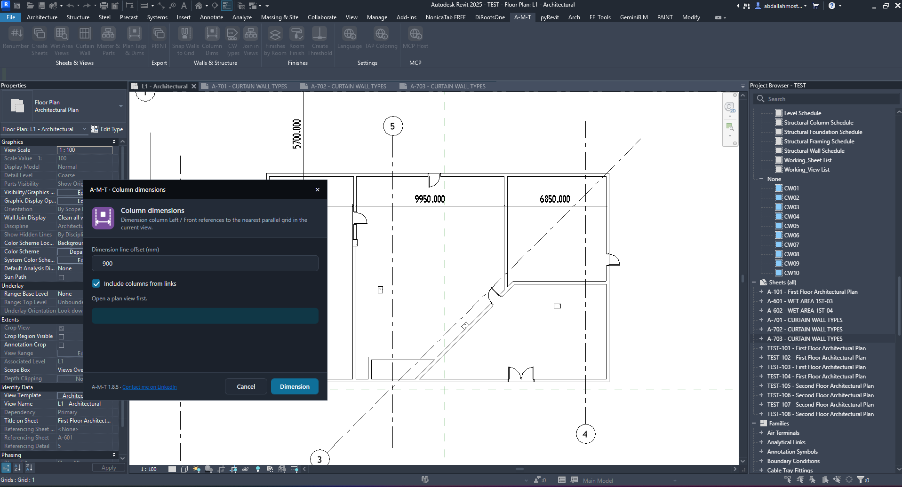
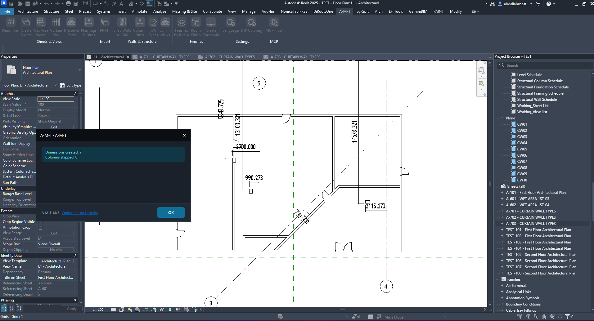

Column Dims
Automatically dimension column Left / Front references to the nearest parallel grid in the current Revit plan view.
How the command works
Set the dimension-line offset, choose whether linked columns are included, then run the command in a plan view.
1. Open the Column dimensions dialog
The command dimensions column Left / Front references to the nearest parallel grid in the current view.
What the command targets
Column Dims works from the active plan view and creates dimensions between the column references and the nearest parallel grid reference.

2. Configure the dimension options
Only two settings are shown in the command dialog.
Dimension line offset (mm)
Sets the offset of the generated dimension line, in millimetres. The supplied example uses 900 mm.
Include columns from links
When checked, linked-model columns are included in the dimensioning operation. The supplied example has this option enabled.
The dialog description specifies Left / Front references and the nearest parallel grid in the current view. The command also indicates that a plan view must be open before running.
3. Create the dimensions
Click Dimension to run the operation using the current view and selected options.
Before clicking Dimension
- Confirm the intended plan view is active.
- Set the required dimension-line offset.
- Enable or disable linked columns as required by the project.
The example uses a 900 mm offset and includes columns from links.
4. Review the result in Revit
The completion dialog reports the number of dimensions created and the number of columns skipped.

Example execution report
In this example, the command created seven dimensions and skipped no columns. Your totals will depend on the active view and the columns available to the command.
Watch Column Dims in Action
Follow the command workflow inside Autodesk Revit.
Run the command checklist
- Open the target Revit plan view.
- Launch Column dimensions.
- Enter the required Dimension line offset (mm).
- Set Include columns from links according to your model setup.
- Click Dimension and review the completion report.
- Inspect the generated dimensions in the plan view.